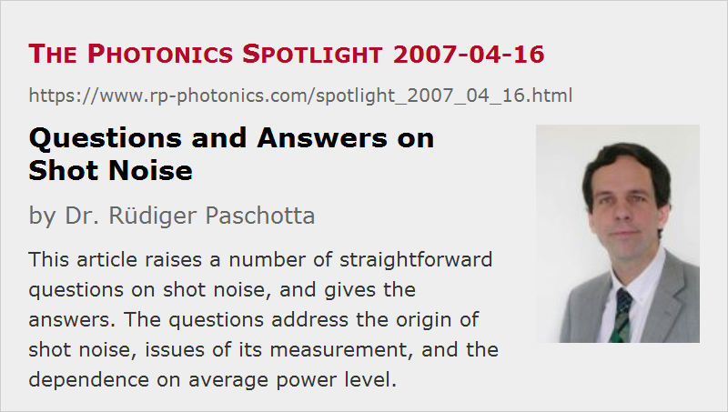

Questions and Answers on Shot Noise
Posted on 2007-04-16 as a part of the Photonics Spotlight (available as e-mail newsletter!)
Permanent link: https://www.rp-photonics.com/spotlight_2007_04_16.html
Author: Dr. Rüdiger Paschotta, RP Photonics Consulting GmbH
Abstract: This article raises a number of straightforward questions on shot noise, and gives the answers. The questions address the origin of shot noise, issues of its measurement, and the dependence on average power level.

Ref.: encyclopedia articles on shot noise, intensity noise, photons, squeezed states of light, relative intensity noise
In a way, shot noise as experienced e.g. with a sensitive photodiode is easy to understand. A common picture is that photons hit the detector in an irregular, uncoordinated manner, so that random intensity fluctuations are registered, which are seen as intensity noise. This picture is quite okay, as long as one doesn't take it too serious (really believing that a light beam simply consists of some kind of particles). Anyway, I suppose that many people would be unsure about a lot of straightforward questions. Some of those are treated in the following.
Does shot noise result from the detection process?
This view was initially plausible: as the photocurrent consists of discrete electrons, even a beam with a constant intensity (in the sense of a constant probability of contributing a photoelectron) will generate some noise. However, this view cannot be maintained: there is so-called amplitude-squeezed light which leads to a lower level of photocurrent noise. So we must interpret shot noise as a property of the light itself, rather than as a result of the detection process.
Why not send an attenuated portion of my laser's output to my photodiode?
While optical attenuation would not change the relatively intensity noise in the case of classical noise (as for simple intensity modulation), it actually does introduce noise on the quantum level (→ quantum noise). This can be seen even in a simple photon picture: if you start with a perfectly regular train of photons (i.e., strongly amplitude-squeezed light), and then remove some of them by pure chance (as any normal absorber does), you get a random result. The consequence is that there is no practical way of detecting noise at the quantum level in powerful laser beams, which are too strong for any photodiode. (A remedy of limited practical scope is to distribute the power over many photodiodes using beam splitters, and combining the photocurrents.)
What is the dependence of shot noise on the average power level?
That depends on what you are looking at: absolute or relative intensity noise, and r.m.s. values or power spectral densities (PSDs). The PSD of the photocurrent is proportional to the detected average power, so the r.m.s. photocurrent noise scales with the square root of the average power. This means that the relative intensity noise scales with the inverse square root of the average power.
Better use a larger or smaller shunt resistor?
When converting a photocurrent into a voltage (to be processed further e.g. with a voltage amplifier) using a simple shunt resistor, that resistor will introduce thermal electronic noise (unless it is cooled to nearly absolute zero). This leads to an additional noise current with a PSD which is inversely proportional to the resistance. So a large resistance is better – as long you can afford to use it, e.g. in the context of detection bandwidth. (It's curious, isn't it: resistance generates noise, but more resistance generates less!)
Wait a moment, some will say: a larger resistance means less current noise, but more voltage noise! Yes, but if you like to consider voltages (which is fine), then you must also not forget that a larger resistor means more voltage from the photocurrent. As that PSD scales with the square of the resistance, but that of thermal noise only in proportion to the resistance, overall the situation becomes better with a higher resistance.
No light, no noise?
Yes and no. Certainly, you get no photocurrent and thus no photocurrent noise in the dark. (dark current is another matter; blame the photodiode for that.) But there are still vacuum fluctuations of the electromagnetic field. And these do matter in various situations; see e.g. the spotlight article Lasers Disturbed by Vacuum? of 2006-08-01.
This article is a posting of the Photonics Spotlight, authored by Dr. Rüdiger Paschotta. You may link to this page and cite it, because its location is permanent. See also the RP Photonics Encyclopedia.
Note that you can also receive the articles in the form of a newsletter or with an RSS feed.
Questions and Comments from Users
Here you can submit questions and comments. As far as they get accepted by the author, they will appear above this paragraph together with the author’s answer. The author will decide on acceptance based on certain criteria. Essentially, the issue must be of sufficiently broad interest.
Please do not enter personal data here; we would otherwise delete it soon. (See also our privacy declaration.) If you wish to receive personal feedback or consultancy from the author, please contact him e.g. via e-mail.
By submitting the information, you give your consent to the potential publication of your inputs on our website according to our rules. (If you later retract your consent, we will delete those inputs.) As your inputs are first reviewed by the author, they may be published with some delay.
|  |
If you like this page, please share the link with your friends and colleagues, e.g. via social media:
These sharing buttons are implemented in a privacy-friendly way!